ADAS-TO: A Large-Scale Multimodal Naturalistic Dataset and Empirical Characterization of Human Takeovers during ADAS Engagement
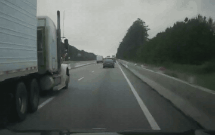
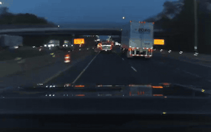
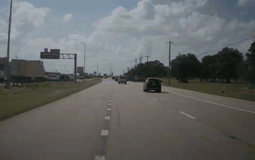
15,000+ real-world takeover events capturing the exact moment drivers reclaim control from automated driving — synchronized video, CAN, and system state.
Abstract
ADAS-TO characterizes transitions from Advanced Driver Assistance Systems (ADAS) back to manual control. It comprises 15,659 twenty-second clips from 327 drivers across 22 vehicle brands, each synchronizing front-camera video with vehicle logs. Takeovers are categorized by trigger — brake, steering, accelerator, combinations, and system disengagement — and by whether they were driver-initiated or forced. Our analysis identifies 285 safety-critical cases and, by combining vehicle kinematics with vision-language-model annotations, finds that actionable visual cues emerge at least three seconds before takeover in roughly 60% of critical events. ADAS-TO provides a rich, multimodal foundation for studying human–automation handover and building predictive take-over warning systems.
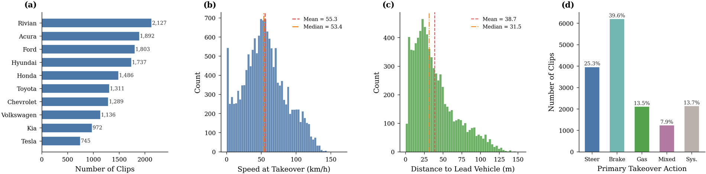
Dataset composition at a glance: sources, triggers, and coverage.
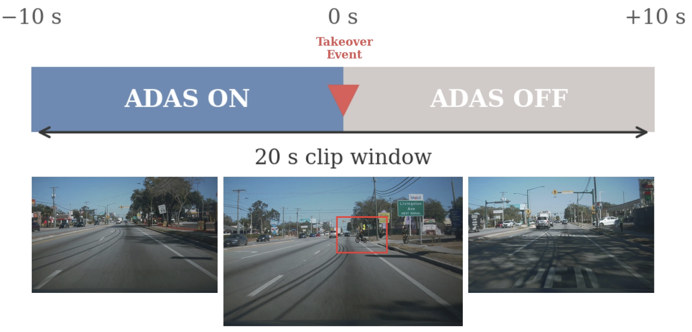
Structure of a 20-second takeover clip with synchronized multimodal streams.
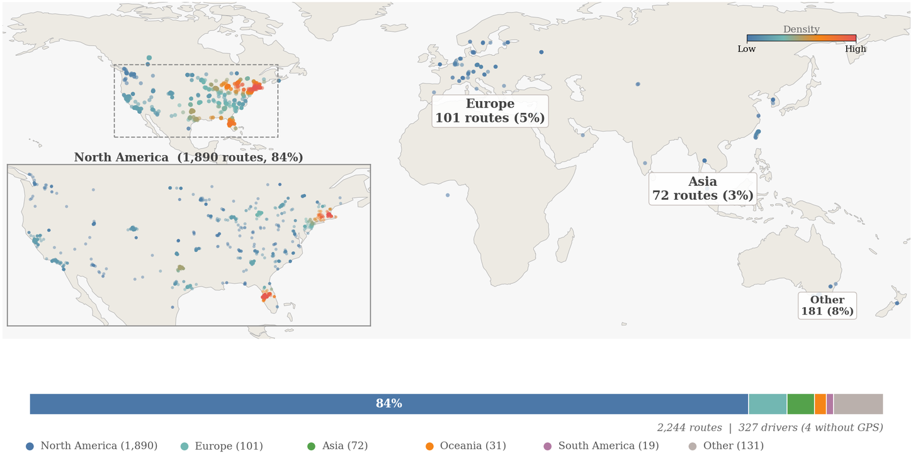
Geographic and environmental distribution of the collected takeovers.
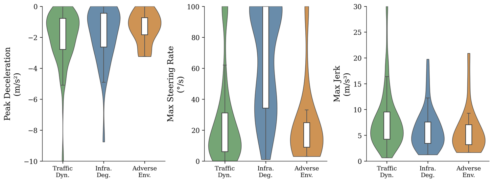
Kinematic profiles of driver take-over actions.
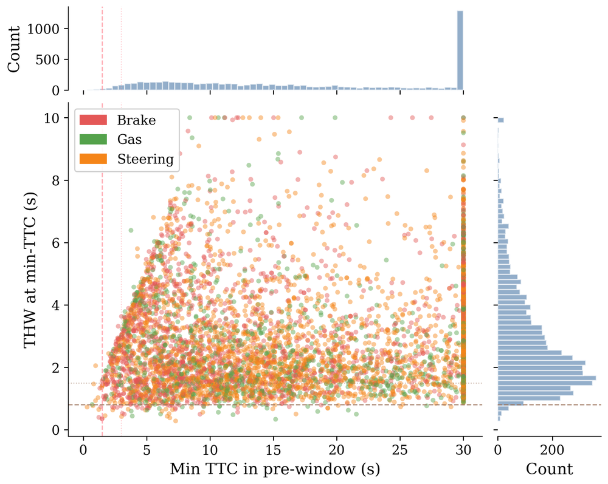
Time-to-collision and time-headway distributions across events.
Take-over Scenarios
Representative real-world moments where drivers reclaim control.
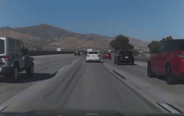
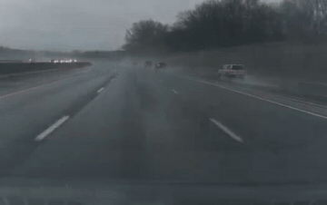
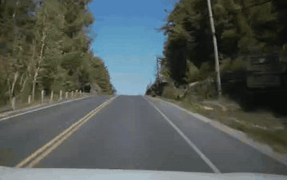
BibTeX
@inproceedings{wang2027adasto,
title = {ADAS-TO: A Large-Scale Multimodal Naturalistic Dataset and Empirical Characterization of Human Takeovers during ADAS Engagement},
author = {Wang, Yuhang and Xu, Yiyao and Sun, Jingran and Zhou, Hao},
booktitle = {IEEE International Conference on Intelligent Transportation Systems (ITSC)},
year = {2027}
}